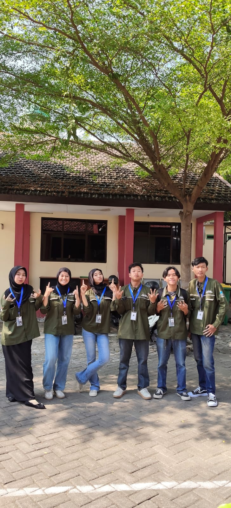

eXotic Gaming & Cafe
Aplikasi manajemen untuk owner dan staff: pantau pendapatan harian, stok kritis, absensi, dan jadwal shift karyawan dari satu aplikasi.


Anggota Tim

- Cintya Azwa Sfrina R.H Saya
- Ingka Jivanda Gayshela
- Shery Febrilia Hendrita
- Mochamad Syfaul Qulub
- Muhammad Afif Ramadhani
- Dia Putra A.I.S
Peran Saya
Tulis di sini ringkasan peranmu dalam project ini.
- Merancang antarmuka dan alur pengguna dengan Figma sebelum implementasi.
- Mengembangkan fitur absensi berbasis deteksi wajah.
- Menerapkan pemetaan area dan deteksi lokasi berbasis GIS untuk memvalidasi lokasi presensi.
Tentang Project
eXotic Gaming & Cafe membutuhkan satu aplikasi untuk mengelola usaha gaming dan kafe, baik dari sisi pemilik maupun karyawan.
Owner melihat pendapatan, total transaksi, kehadiran karyawan, dan stok kritis. Staff melakukan absen masuk dan keluar serta melihat jadwal shift. Tulis di sini latar belakang dan peranmu.
Fitur Utama
Dashboard Owner
Pendapatan hari ini, total transaksi, dan grafik pendapatan mingguan.
Absensi Harian
Absen masuk dan keluar, lengkap rekap tepat waktu, terlambat, dan izin.
Jadwal Shift
Shift pagi, siang, dan sore dengan status selesai, berlangsung, atau akan datang.
Stok Kritis
Pantau item yang hampir habis agar bisa segera diisi ulang.